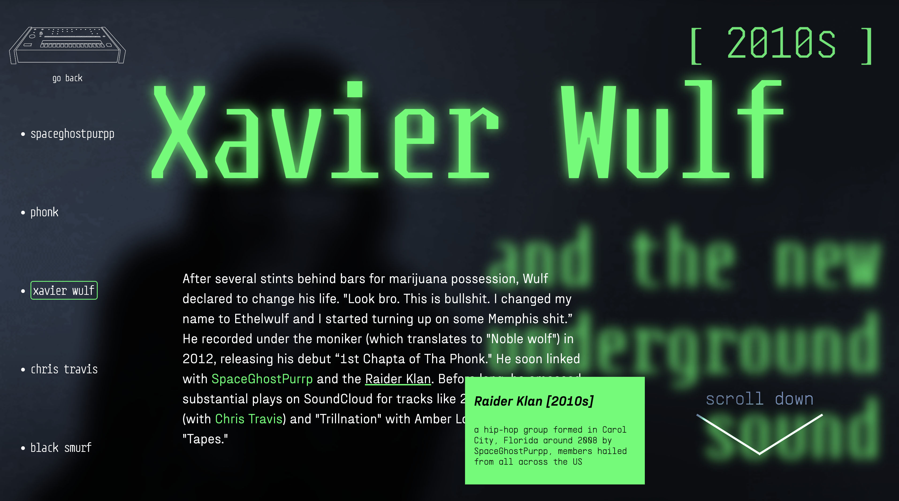
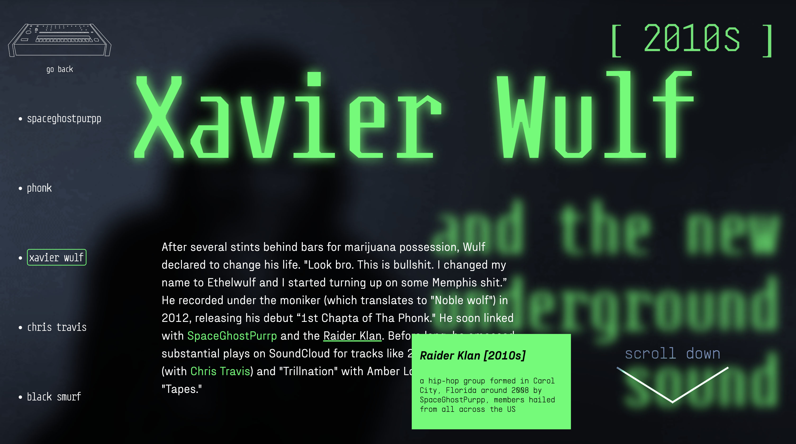

Galen Aubrey Hicks
Memphis Rap Archive
Memphis Rap Archive is a website that chronicles the Memphis underground hip-hop sound of the
90s and how it has influenced the underground internet rap scene in the 2010s, as well as the contemporary
Memphis rap sound and modern hip-hop in general.
Memphis rap has had a large influence on the current sound of hip-hop, but it is often left out of the conversation;
this website aims to take various scattered elements from across the internet to show the influence clearly and shine
a light on an underappreciated subgenre.

 
